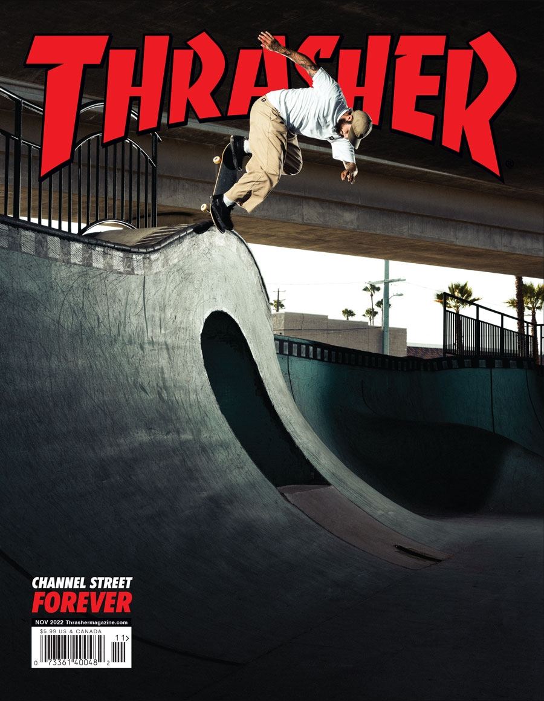

Interests
Skateboarding
While I do enjoy other more tradtional sports such as baseball, football, and basketball, I've always gravitated towards skateboarding for a long time. What probably helped spark my interest in skateboarding was having one of my cousins being a skateboarder himself and making skateboarding videos for a skate shop in Kelso, Washington. I also played the Tony Hawk games a lot of as a kid but we'll save video game discussion for another section. In middle school I got a skateboard for Christmas and while I never got good enough to do any tricks it was still fun to just skate around some areas. I haven't gone skateboarding in a long time but I hope to do so in the future.
Video games
Video games have been a part of my life for as long as I can remember. Some of my earliest memories involve playing edutainment games on the family computer. When I was growing up my family wasn't always able to get the newest consoles at the time so for a few years I only had a PS1 and PS2 to play when consoles like the Xbox 360 and PS3 were out, but I did get a PS3 for Christmas of 2009. Some of my favorite games and game series include Burnout 3 Takedown, Team Fortress 2, the Max Payne trilogy, Zelda Twilight Princess, Street Fighter, Mortal Kombat, Far Cry 3 Blood Dragon, Dead or Alive, Sonic the Hedgehog, Halo, Dark Souls, Resident Evil 4, Doom 2016, and Jak and Daxter.
Art and animation
Art and animation is another life long interest I've had. I remember making very crude drawings when I was younger and there was even a point in my life when I wanted to make comics or cartoons of my own, but as of now I'm more focused on learning how to code and program. What I think is great about art and animation is once you get a good grasp on it, the only thing that limits what you can do or what kind of story you want to tell with the mediums is your imagination. Some of the best stories we've had come from graphic novels and animated tv shows and movies. It's why even if it never becomes my main job I still want to learn how to draw properly eventually. My example for this section will be the intro to one of my favorite tv shows, the Japanese animated series Tengen Toppa Gurren Lagann
Other interests
- Music
- Media preservation
- Figure collecting
- Video editing
- History
- Swimming
- Programming